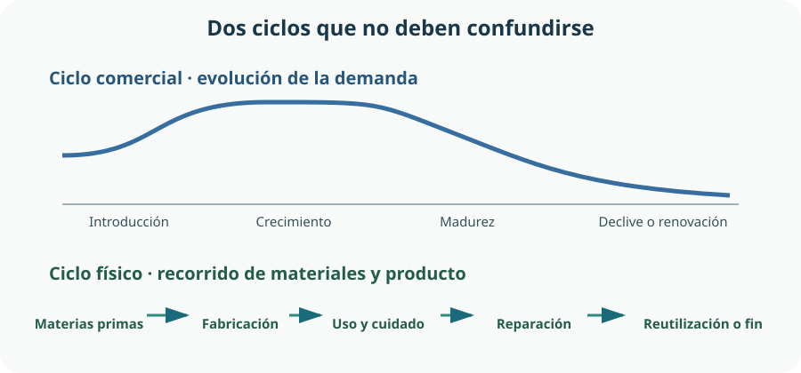

En tecnología no basta con que un objeto «funcione hoy». Hay que comprobar a quién sirve, qué prestaciones necesita, cómo puede mantenerse y qué ocurre con sus materiales después. El currículo de Tecnología de 4.º de la ESO pide analizar la necesidad, la demanda, la evolución y el final del ciclo de vida de un producto, eliminar la obsolescencia programada y aplicar criterios responsables al seleccionar materiales y procesos.[10] Este enfoque se integra en el marco estatal de la etapa, orientado al desarrollo competencial.[11]
- distinguir una necesidad de una solución ya decidida;
- analizar la demanda y explicar cómo puede evolucionar;
- diferenciar el ciclo comercial del ciclo de vida ambiental;
- detectar decisiones que acortan innecesariamente la vida útil;
- formular requisitos medibles de uso, seguridad, accesibilidad y mantenimiento;
- relacionar propiedades de los materiales con esos requisitos;
- emplear una matriz ponderada sin convertirla en una respuesta automática;
- valorar impactos de fabricación, uso y retirada antes de elegir.
1. Del problema al producto: necesidad, función y personas
Un producto tecnológico es una solución diseñada para satisfacer una necesidad mediante materiales, energía, información y procesos. La necesidad expresa un resultado deseado; el producto es solo una de las respuestas posibles. Confundirlos cierra demasiado pronto el espacio de diseño.
Necesidad
«Localizar y devolver con seguridad los componentes del taller, también cuando hay poco espacio, distinta altura de alcance o dificultad para distinguir etiquetas».
Solución propuesta
«Organizador con módulos intercambiables, identificación visual y táctil, huecos accesibles y piezas reemplazables por separado».
La primera frase permite comparar una pared de paneles, un carro móvil, armarios bajos o cajas apilables. La segunda ya define una dirección concreta. Antes de adoptarla hay que identificar a las personas usuarias, el contexto y las restricciones.
| Pregunta | Información necesaria | Ejemplo de requisito |
|---|---|---|
| ¿Quién lo usa? | Alumnado, profesorado y personal de mantenimiento; diversidad de estatura, movilidad, visión y destreza manual. | Los elementos de uso frecuente estarán en una franja de alcance acordada y tendrán rótulos legibles, pictograma y marca táctil cuando sea útil. |
| ¿Qué debe organizar? | Cantidad, dimensiones, masa, frecuencia de uso y posibles riesgos. | Cada módulo indicará su carga máxima y retendrá las piezas pequeñas al abrirlo. |
| ¿Dónde funcionará? | Espacio, humedad, polvo, golpes, recorridos y evacuación. | El conjunto no invadirá pasillos ni presentará aristas cortantes. |
| ¿Durante cuánto tiempo? | Cambios de inventario, desgaste y mantenimiento previsto. | La distribución se podrá reconfigurar y un módulo dañado se sustituirá sin retirar la estructura. |
| ¿Cómo sabremos si sirve? | Indicadores y límites de aceptación. | Una persona localizará un componente habitual mediante la misma codificación en el inventario y en el módulo. |
2. Demanda: cuántas personas lo necesitan y cómo cambia
La demanda representa la cantidad de un producto o servicio que las personas o entidades estarían dispuestas a adquirir o utilizar en unas condiciones determinadas. No equivale a necesidad: puede existir una necesidad sin presupuesto, información o acceso, y puede haber interés comercial creado por una moda sin que el producto resuelva un problema importante.
En un proyecto escolar no hace falta fingir un gran estudio de mercado. Sí hace falta reunir evidencias suficientes para no diseñar solo desde nuestra experiencia. Para el organizador interesan, entre otros datos:
- número y variedad de componentes que se almacenan;
- frecuencia con la que se extraen y devuelven;
- errores de localización, pérdidas, roturas y tiempo empleado;
- cambios previstos en herramientas, grupos y distribución del taller;
- necesidades de acceso, limpieza, seguridad e inventario;
- presupuesto inicial y coste de mantenerlo durante los años previstos.
La demanda evoluciona
Puede aumentar porque el producto resuelve mejor la necesidad, baja de precio, se conoce más o aparece una norma que lo favorece. Puede disminuir porque cambia la actividad, surge una alternativa, se satura el grupo de usuarios o se pierde confianza. También puede desplazarse: quizá no se necesiten más organizadores completos, sino nuevos módulos compatibles.
El taller tiene recipientes incompatibles y señalización irregular. La demanda se centra en ordenar y reducir pérdidas.
Se descubre que los módulos más pequeños se llenan antes y que ciertos tiradores requieren demasiada fuerza. La información de uso modifica los requisitos.
Llegan nuevos sensores y herramientas. Si el sistema admite divisores, etiquetas actualizables y módulos compatibles, puede adaptarse sin reemplazarlo entero.
3. Ciclo comercial: introducción, crecimiento, madurez y declive
El ciclo de vida comercial es un modelo que describe cómo pueden evolucionar las ventas o la adopción de un producto en el mercado. Ayuda a pensar decisiones de producción, comunicación y mejora, pero no es una ley: las etapas pueden durar tiempos muy diferentes, repetirse tras una actualización o no mostrar una curva clara.
| Etapa | Qué suele ocurrir | Decisión razonable | Riesgo |
|---|---|---|---|
| Introducción | Pocas unidades, coste unitario alto, producto poco conocido y muchas dudas. | Fabricar una serie corta, documentar incidencias y corregir el diseño. | Confundir novedad con necesidad real. |
| Crecimiento | Aumenta la adopción y aparecen variantes o competidores. | Estabilizar interfaces entre módulos y asegurar repuestos. | Cambiar medidas demasiado rápido y perder compatibilidad. |
| Madurez | La demanda se estabiliza y el diseño se conoce bien. | Mejorar mantenimiento, coste y fabricación sin romper lo que funciona. | Forzar sustituciones mediante cambios solo estéticos. |
| Declive | Disminuye la demanda por saturación, cambio de actividad o alternativa mejor. | Mantener repuestos durante un periodo previsto, facilitar adaptación y planificar retirada. | Abandonar módulos útiles o dejar a las personas sin soporte. |

4. Obsolescencia, durabilidad, reparación y actualización
Un producto se vuelve obsoleto cuando deja de ser adecuado para el uso esperado, aunque a veces todavía funcione físicamente. Puede ocurrir por desgaste, cambio de necesidades, incompatibilidad, falta de repuestos o soporte, o porque una alternativa ofrece una mejora relevante.
La obsolescencia programada aparece cuando se toman decisiones deliberadas para limitar de forma injustificada la duración o utilidad y provocar una sustitución prematura. No debe emplearse como acusación automática ante cualquier avería: demostrar intención requiere evidencias sobre diseño, información, repuestos, software y prácticas comerciales.
| Problema | Ejemplo en el organizador | Respuesta preventiva |
|---|---|---|
| Física o por desgaste | Un tirador frágil rompe antes que el cajón. | Dimensionar la pieza, ensayarla y permitir sustituirla con herramientas comunes. |
| Por incompatibilidad | La nueva serie cambia sin necesidad el encaje de los módulos. | Definir una interfaz estable y publicar dimensiones o adaptadores. |
| Por falta de mantenimiento | No puede limpiarse el carril o reapretarse una unión. | Dar acceso, instrucciones y puntos de inspección. |
| Por cambio funcional | Aparecen componentes de otro tamaño. | Usar divisores, módulos intercambiables y etiquetas actualizables. |
| Percibida | El color pasa de moda, aunque el conjunto siga cumpliendo su función. | Separar acabado e identidad de las piezas estructurales; valorar la necesidad real del cambio. |
La regulación europea de ecodiseño contempla durabilidad, fiabilidad, reparabilidad, posibilidad de actualización, reutilización y reciclabilidad. También identifica como posibles causas de obsolescencia prematura la dificultad para desmontar, la ausencia de información o repuestos y determinadas limitaciones de software.[12] La Directiva europea sobre reparación busca que determinados bienes cubiertos por requisitos de reparabilidad puedan mantenerse en uso y que el acceso a reparación, piezas e información no se obstaculice injustificadamente.[13]
Durabilidad
Capacidad de conservar función y seguridad durante el tiempo y las condiciones previstas. Requiere definir cargas, ciclos, ambiente y mantenimiento.
Reparabilidad
Facilidad para diagnosticar, abrir, acceder, reemplazar y volver a montar sin dañar otras partes, con piezas, información y herramientas disponibles.
Actualizabilidad
Capacidad de mejorar o adaptar una parte sin sustituir todo el producto: nuevos divisores, señalización o módulos compatibles.
La normativa europea sobre información al consumidor también aborda prácticas relacionadas con la durabilidad, las actualizaciones y la obsolescencia temprana.[17] Para quien diseña, la lección es sencilla: comunicar límites y mantenimiento con claridad forma parte de la calidad del producto.
5. De las propiedades a la selección de materiales
Preguntar «¿qué material es mejor?» está incompleto. Hay que preguntar: ¿mejor para qué función, durante cuánto tiempo, en qué entorno y con qué proceso? Una propiedad describe cómo responde un material; un requisito establece el nivel que el producto debe alcanzar.
| Propiedad | Qué indica | Por qué importa | Cómo obtener evidencia |
|---|---|---|---|
| Rigidez | Resistencia a deformarse elásticamente bajo carga. | Un estante flexible puede atascar módulos o inclinar recipientes. | Ensayo de carga y medida de la flecha en una muestra. |
| Resistencia | Capacidad de soportar esfuerzos sin fallo. | Uniones y soportes deben tolerar la carga prevista y un margen de seguridad. | Datos técnicos y ensayo del conjunto, no solo del material aislado. |
| Tenacidad | Capacidad de absorber energía antes de romper. | Los cajones reciben golpes y caídas. | Comparación de probetas o piezas equivalentes en condiciones controladas. |
| Dureza | Resistencia al rayado o a la penetración; puede influir en el desgaste, pero no lo determina por sí sola. | Los carriles se abren muchas veces. | Prueba de ciclos: el desgaste depende también del rozamiento, la superficie y las condiciones de uso. |
| Densidad | Masa por unidad de volumen. | Condiciona la masa del carro o panel, pero no determina por sí sola su impacto. | Ficha técnica o medida de masa y volumen. |
| Durabilidad frente al entorno | Respuesta a humedad, corrosión, productos de limpieza, temperatura y radiación ultravioleta. | El material debe conservar higiene, forma y seguridad. | Compatibilidad declarada y ensayo seguro con las condiciones reales previstas. |
| Procesabilidad | Facilidad y seguridad de corte, plegado, moldeo, unión o acabado. | Determina herramientas, energía, tiempo, residuos y precisión. | Prototipo del detalle más difícil con el proceso disponible. |
Las propiedades de una pieza no dependen únicamente del nombre del material. También influyen el espesor, la geometría, la orientación, el tratamiento, la calidad, el proceso y la unión. Una chapa plegada puede ser más rígida que una chapa plana de igual material; un polímero adecuado puede resistir golpes mejor que otro de aspecto parecido.
6. Matriz de decisión: hacer visibles los compromisos
Una matriz de decisión ponderada organiza una comparación. Primero se descartan las opciones que incumplen requisitos obligatorios. Después se asigna un peso a cada criterio y una puntuación a cada alternativa. La suma ponderada se calcula así:
resultado = Σ (peso del criterio × puntuación de la alternativa)
La tabla siguiente es un ejemplo didáctico para la estructura principal. Usa una escala de 1 (respuesta muy baja) a 5 (muy alta). Sus puntuaciones son hipótesis iniciales: deben sustituirse por fichas técnicas, observación del proceso y ensayos del prototipo.
| Criterio | Peso | Contrachapado | PP reciclado | Acero plegado | Aluminio |
|---|---|---|---|---|---|
| Seguridad y estabilidad | 5 | 4 | 4 | 5 | 5 |
| Rigidez con la geometría propuesta | 4 | 4 | 3 | 5 | 4 |
| Reparación y uniones reversibles | 4 | 4 | 3 | 5 | 4 |
| Masa reducida | 2 | 3 | 5 | 2 | 4 |
| Fabricación con medios disponibles | 3 | 4 | 4 | 2 | 2 |
| Evidencia ambiental para el caso | 4 | 3 | 3 | 3 | 2 |
| Total ponderado | Máx. 110 | 82 | 78 | 87 | 79 |
En este ejemplo gana el acero, pero la conclusión todavía no está cerrada. Si el taller no puede plegarlo con precisión o la masa impide mover el conjunto con seguridad, esa alternativa puede incumplir un requisito obligatorio. Si una estructura existente puede reutilizarse, quizá sea preferible adaptarla. Si cambian los pesos, los datos o la función, cambia el resultado.
Cómo usar la matriz sin engañarnos
- Separar mínimos y preferencias. La seguridad no se compensa con una puntuación alta en estética.
- Justificar pesos. Deben proceder de la necesidad y de las personas usuarias, no favorecer una opción elegida de antemano.
- Definir la escala. «5 en reparación» debe corresponder a condiciones observables: acceso, herramienta, tiempo, repuesto y montaje posterior.
- Registrar incertidumbre. Una estimación no tiene la misma calidad que un dato ensayado.
- Revisar la estabilidad de la decisión. Como ampliación, puede comprobarse si un pequeño cambio de peso altera el resultado; si ocurre, hacen falta más datos.
- Explicar compromisos. La puntuación resume, pero no borra ventajas, riesgos ni requisitos no cuantificados.
7. Ciclo de vida ambiental: fabricación, uso y retirada
Un análisis sencillo del ciclo de vida compara alternativas que prestan un servicio equivalente y recorre sus etapas principales: materias primas, fabricación, transporte, uso, mantenimiento, reutilización y final de vida. No basta comparar un kilogramo de cada material si las soluciones duran o funcionan de manera distinta.
| Etapa | Qué observar | Posibles mejoras | Cuidado con… |
|---|---|---|---|
| Materias primas | Cantidad, origen, contenido recuperado, sustancias preocupantes y trazabilidad. | Reducir material sin perder seguridad; aprovechar piezas existentes; pedir datos verificables. | Suponer que una etiqueta aislada describe todo el impacto. |
| Fabricación | Energía, agua, recortes, emisiones, acabados, herramientas y exposición de las personas. | Optimizar el despiece, reutilizar recortes, evitar procesos innecesarios y diseñar para fabricar con precisión. | Ahorrar material si el resultado queda frágil y dura mucho menos. |
| Distribución e instalación | Masa, volumen, embalaje, distancia, número de viajes y fijaciones. | Diseño desmontable o encajable, proveedores adecuados y embalaje reutilizable. | Generalizar: el transporte relevante depende de distancia, carga y modo. |
| Uso y mantenimiento | Limpieza, consumibles, energía si la hay, fallos, repuestos y tiempo fuera de servicio. | Superficies mantenibles, piezas reemplazables y manual claro. | Ignorar esta etapa porque un producto pasivo consuma poca energía. |
| Reutilización y fin de vida | Reconfiguración, segunda vida, desmontaje, separación, recogida y tratamiento local. | Uniones reversibles, materiales identificados y plan de devolución o clasificación. | Afirmar que algo «es reciclable» si no puede separarse o no existe circuito real. |
La retirada no empieza en el contenedor
La jerarquía europea de residuos prioriza, por este orden, prevención, preparación para la reutilización, reciclado, otras formas de valorización y eliminación.[14] Para el organizador, prevenir puede significar adaptar una estructura existente, alargar su uso o cambiar solo el módulo roto. Reutilizar conserva más función que triturar materiales para reciclarlos.
La economía circular, la regulación y los residuos de aparatos eléctricos y electrónicos se estudiarán con más detalle en el Tema 13. Aquí basta justificar cómo reducir material, alargar la vida, reparar y separar las piezas al retirarlas.[14]
8. Caso integrado: una decisión defendible para el aula-taller
Después de observar el taller, el equipo redefine el reto: crear un organizador modular accesible, mantenible y adaptable al inventario real. Descarta diseños inestables o con aristas, aunque obtengan buena puntuación en otros criterios.
Arquitectura propuesta
Estructura conservada
Se revisa y adapta un bastidor metálico ya disponible. Reutilizarlo evita fabricar otra estructura si cumple estabilidad, dimensiones y estado.
Módulos reemplazables
Cajas ligeras con divisores, topes y tiradores atornillados. Cada geometría se ensaya con la carga y los ciclos de apertura previstos.
Interfaz estable
Las dimensiones de carril y anclaje se documentan. Nuevas cajas o adaptadores pueden añadirse sin invalidar las anteriores.
Información accesible
Texto claro, pictogramas coherentes, contraste suficiente y codificación táctil donde aporte valor; no se confía solo en el color.
Esta propuesta mezcla materiales porque las funciones son distintas. No proclama que la combinación sea siempre la más sostenible: su ventaja depende del estado del bastidor, del origen y espesor de los módulos, de la fabricación disponible, del mantenimiento y del tratamiento final real. La decisión queda abierta a revisión cuando aparezcan datos mejores.
| Decisión | Evidencia o razón | Compromiso asumido | Comprobación prevista |
|---|---|---|---|
| Reutilizar el bastidor | Ya existe y puede inspeccionarse. | Puede limitar algunas dimensiones. | Revisar corrosión, estabilidad, fijaciones y carga. |
| Separar módulos y estructura | Los módulos reciben más desgaste y cambian con el inventario. | Aumenta el número de uniones y piezas. | Ciclos de montaje, apertura y sustitución. |
| Uniones mecánicas accesibles | Facilitan desmontaje y reparación. | Pueden aflojarse y exigen inspección. | Plan de reapriete y piezas normalizadas. |
| Etiquetas reemplazables y redundantes | El inventario cambia y el color no sirve a todas las personas. | Requieren disciplina de actualización. | Prueba de localización con personas usuarias diversas. |
| Conservar documentación | Sin medidas, despiece y repuestos, la modularidad se pierde. | Exige mantener archivos y versiones. | Comprobar que otra persona puede identificar y cambiar una pieza. |
Preguntas finales antes de aprobar el diseño
- ¿Responde a la necesidad o solo reproduce la primera idea?
- ¿La demanda se ha observado y puede cambiar?
- ¿Qué pieza limita la duración del conjunto?
- ¿Puede abrirse, limpiarse, ajustarse y repararse con seguridad?
- ¿Las interfaces seguirán siendo compatibles y estarán documentadas?
- ¿La comparación ambiental usa la misma función y duración?
- ¿Qué impactos pueden haberse desplazado a otra etapa?
- ¿Existe una ruta realista de reutilización, separación y gestión final?
Glosario del tema
- Necesidad
- Situación que requiere una mejora o resultado; no presupone una solución concreta.
- Producto tecnológico
- Bien o sistema diseñado para responder a una necesidad mediante recursos y procesos.
- Demanda
- Cantidad que las personas u organizaciones utilizarían o adquirirían bajo unas condiciones determinadas.
- Ciclo comercial
- Modelo de evolución de la adopción o ventas: introducción, crecimiento, madurez y declive.
- Ciclo de vida ambiental
- Etapas físicas conectadas desde las materias primas hasta el uso, la reutilización y el fin de vida.
- Vida útil
- Periodo durante el cual el producto cumple de forma aceptable su función prevista.
- Obsolescencia programada
- Limitación deliberada e injustificada de la duración o utilidad para favorecer una sustitución prematura.
- Durabilidad
- Capacidad de mantener función y seguridad durante el tiempo y condiciones previstos.
- Reparabilidad
- Facilidad y viabilidad de diagnosticar, acceder, sustituir piezas y restaurar la función.
- Actualizabilidad
- Capacidad de adaptar o mejorar una parte sin sustituir el producto completo.
- Requisito
- Condición verificable que la solución debe cumplir.
- Propiedad
- Característica medible o comparable de un material o pieza ante una condición.
- Matriz ponderada
- Herramienta que combina puntuaciones y pesos para comparar alternativas de forma explícita.
- Unidad funcional
- Descripción cuantificada del servicio usado como referencia para comparar ciclos de vida.
- Límite del sistema
- Conjunto de etapas y procesos incluidos en un análisis.
- Fin de vida
- Etapa que comienza cuando el producto se descarta e incluye recogida, preparación para reutilización, reciclado, valorización o eliminación.
Resumen esencial
- La necesidad describe el resultado; el producto es una posible solución y debe considerar a personas y contexto.
- La demanda no equivale a necesidad y puede cambiar por uso, precio, alternativas, confianza o evolución del entorno.
- El ciclo comercial —introducción, crecimiento, madurez y declive— no es el ciclo de vida ambiental.
- Evitar obsolescencia exige durabilidad, reparación, actualización, compatibilidad, repuestos, información y mantenimiento.
- Un material se selecciona según requisitos, propiedades, geometría, proceso, duración y final de vida; ninguno es siempre la opción sostenible.
- Una matriz ponderada transparenta criterios y supuestos, pero no sustituye los requisitos mínimos, las pruebas ni el juicio técnico.
- El análisis ambiental compara una misma función e incluye materias primas, fabricación, distribución, uso, mantenimiento y retirada.
- La prevención y la reutilización preceden al reciclado; diseñar la retirada desde el inicio facilita conservar piezas y materiales.
Fuentes y recursos fiables
- [10] Comunidad de Madrid — Decreto 65/2022, de 20 de julio: ordenación y currículo de la ESO (PDF). Véase el Anexo II, materia de Tecnología de 4.º de la ESO.
- [11] BOE — Real Decreto 217/2022, de 29 de marzo: ordenación y enseñanzas mínimas de la ESO.
- [12] Unión Europea — Reglamento (UE) 2024/1781, marco para el establecimiento de requisitos de ecodiseño aplicables a productos sostenibles.
- [13] Unión Europea — Directiva (UE) 2024/1799 sobre normas comunes para promover la reparación de bienes.
- [14] Unión Europea — Directiva 2008/98/CE sobre los residuos y jerarquía de residuos.
- [16] Comisión Europea — Recomendación sobre el uso de los métodos de Huella Ambiental.
- [17] Unión Europea — Directiva (UE) 2024/825 para empoderar a los consumidores para la transición ecológica.
- [18] Comisión Europea — Método de Huella Ambiental de Producto, anexos I y II (PDF).